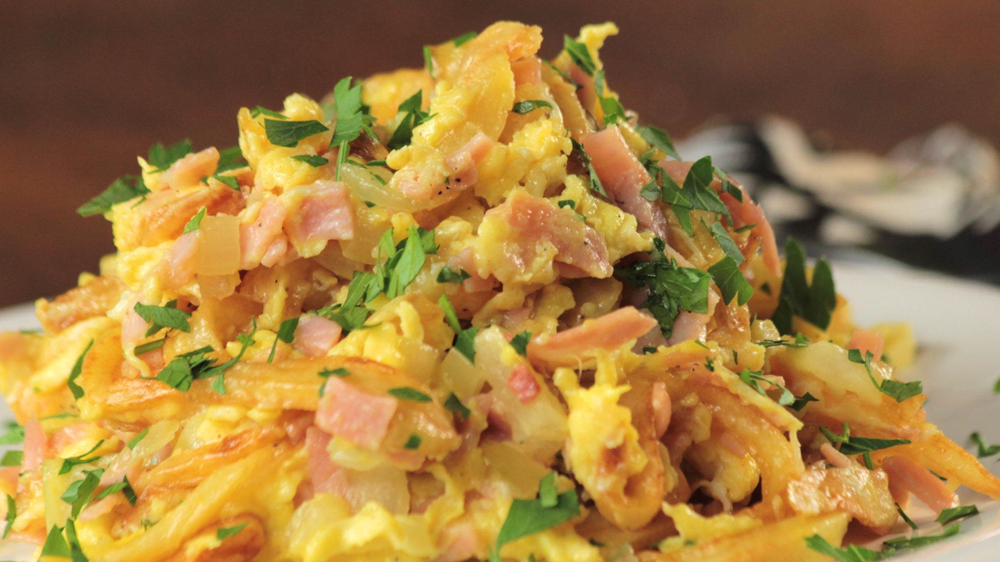

Revuelto de gramajo

receta super rica
LISTA DE INGREDIENTES:
- ½ kg de papa
- 1 cebolla medianas
- 1 cebolla de verdeo pequeña
- ½ pimiento morrón
- 2 dientes de ajo
- 100 gr de jamón cocido
- 4 huevos
- Un puñado de arvejas
- Perejil
- Pimienta
- Aceite de oliva
- Aceite para freír
LISTA DE PASOS:
- Cortar las papas en tiras finas y freír. Tienen que quedar como las papas pay. Reservar.
- Cortar las cebollas y los morrones en tiritas, la cebolla de verdeo fina y saltear en una sartén con aceite de oliva hasta que la cebolla quede transparente.
- Picar el ajo bien chiquito y el jamón en tiras. Sumar a la mezcla anterior y condimentar a gusto.
- En un bol aparte batir los huevos. Sumar a la preparación e incorporar bien. Sumar las papas ya fritas junto con las
- Al momento de servir espolvorear con perejil picado fino.
Volver a receta
Volver al inicio